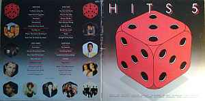
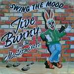
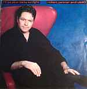
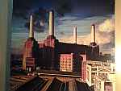
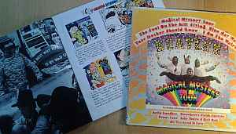

There is nothing quite so satisfying as coming home with a new record. Vinyl versions of albums can be expensive these days and it is easier to download anything I want to listen to regularly, but I still love owning a real album. My collection includes records I bought and items previously owned by members of my family. I rescued everything they no longer wanted when they decided to leave vinyl behind. There are some items in my collection I would be embarrassed to let others see, but I still keep them even though I have never listened to them.
Hits 5 is the first album I owned. My parents bought it for me for Christmas one year. It includes gems like Paul Simon’s ‘You can call me Al’ and Julian Cope’s ‘World shut your mouth’. The first single I bought was either Jive Bunny and the Mastermixers’ ‘Swing the mood’ or Robert Palmer and UB40’s ‘I’ll be your baby tonight’, I can’t remember which one I bought first. The album ‘Animals’ by Pink Floyd was one that my dad owned. I love the cover image of the inflatable pig floating over Battersea Power Station. The Beatles were a favourite band of both my parents. As I child I enjoyed ‘Magical Mystery Tour’ for the songs and the book that goes with it.